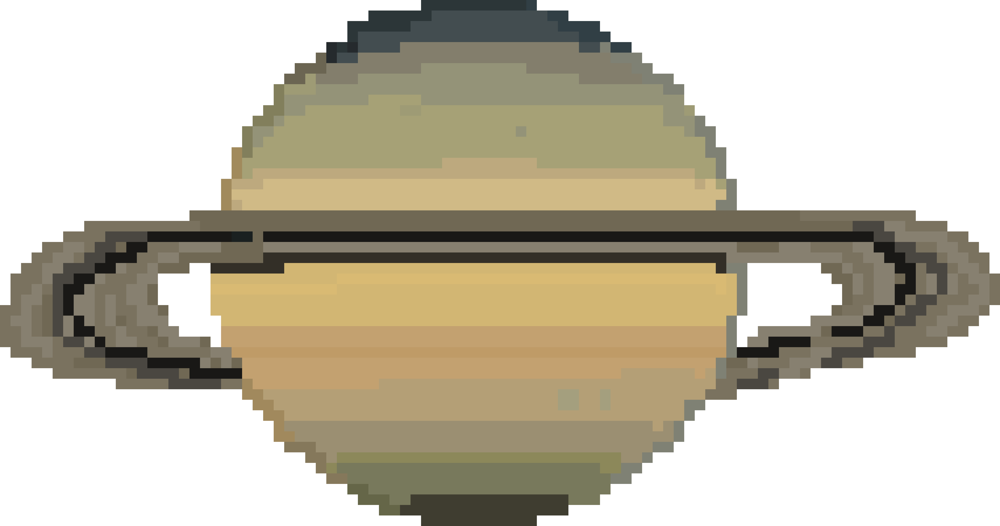
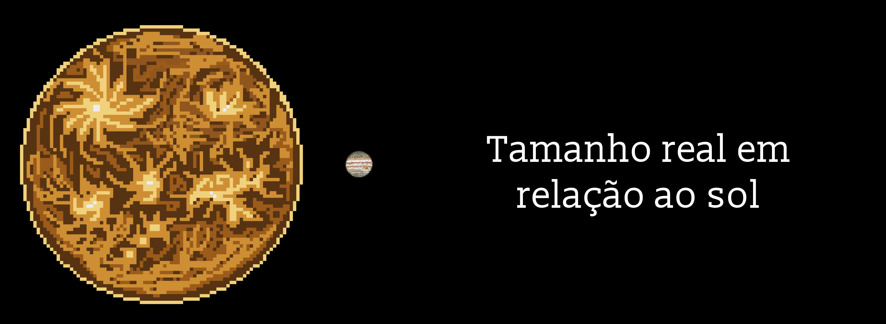

Saturno

Saturno: o senhor dos anéis
Saturno é o sexto planeta a partir do Sol e o segundo maior do Sistema Solar, perdendo só para Júpiter. Seu nome vem do deus romano do tempo e da agricultura, pai de Júpiter. Da Terra, dá para vê-lo a olho nu como um ponto amarelado, mas os famosos anéis só aparecem com um telescópio. Quando Galileu o observou em 1610, com um telescópio simples, achou que o planeta tinha "orelhas".
Um planeta que flutuaria
Assim como Júpiter, Saturno é um gigante gasoso, feito principalmente de hidrogênio e hélio, sem uma superfície firme. Ele é tão pouco denso que, se existisse uma banheira grande o suficiente, Saturno flutuaria na água. É o único planeta do Sistema Solar mais leve que a água em relação ao seu tamanho.
Dia curto, ano longo
Um dia em Saturno dura cerca de 10 horas e meia, mas um ano leva quase 30 anos terrestres. Ou seja, uma pessoa de 30 anos na Terra teria apenas 1 ano de idade em Saturno. Seus ventos também estão entre os mais rápidos do Sistema Solar, chegando a cerca de 1.800 km/h.

Anéis de gelo
Os anéis de Saturno são formados por bilhões de pedaços de gelo e rocha, alguns do tamanho de um grão de areia, outros do tamanho de uma casa. Eles se espalham por centenas de milhares de quilômetros, mas são finíssimos: na maior parte, têm só algumas dezenas de metros de espessura, como uma folha de papel do tamanho de um campo de futebol. De tempos em tempos, os anéis ficam de lado para a Terra e quase desaparecem de vista, como aconteceu em 2025. E eles não vão durar para sempre, porque aos poucos o gelo dos anéis está "chovendo" sobre o planeta.
Um hexágono no polo
No polo norte de Saturno existe uma tempestade com um formato surpreendente: um hexágono quase perfeito, com cada lado maior que o diâmetro da Terra. Ele gira há décadas e ainda intriga os cientistas, que tentam entender como uma forma tão geométrica consegue se manter na atmosfera de um planeta.
O campeão das luas
Saturno é o planeta com mais luas do Sistema Solar. Em março de 2026, mais 11 luas foram confirmadas, levando o total a 285, bem à frente de Júpiter, que tem 101. A maioria é minúscula, com poucos quilômetros de largura, mas duas se destacam. Titã, maior que o planeta Mercúrio, é a única lua com uma atmosfera densa e tem rios, lagos e até chuva, só que de metano em vez de água. Já Encélado, uma pequena lua de gelo, lança jatos de água para o espaço a partir de um oceano escondido sob a superfície.
Visitas ao senhor dos anéis
A sonda Cassini estudou Saturno por 13 anos e levou junto a Huygens, que em 2005 pousou em Titã, o pouso mais distante já feito pela humanidade. Em 2017, com o combustível acabando, a Cassini mergulhou de propósito em Saturno para não contaminar luas que podem ter condições para vida. A próxima visita será a Dragonfly, da NASA: um drone movido a energia nuclear, com lançamento previsto para 2028 e chegada em Titã em 2034, que vai voar de um ponto a outro da lua procurando os ingredientes químicos da vida.
A mesma confirmação de março de 2026 elevou Júpiter para 101 luas, então no texto dele vale trocar "mais de 90 luas conhecidas" por "mais de 100 luas conhecidas".